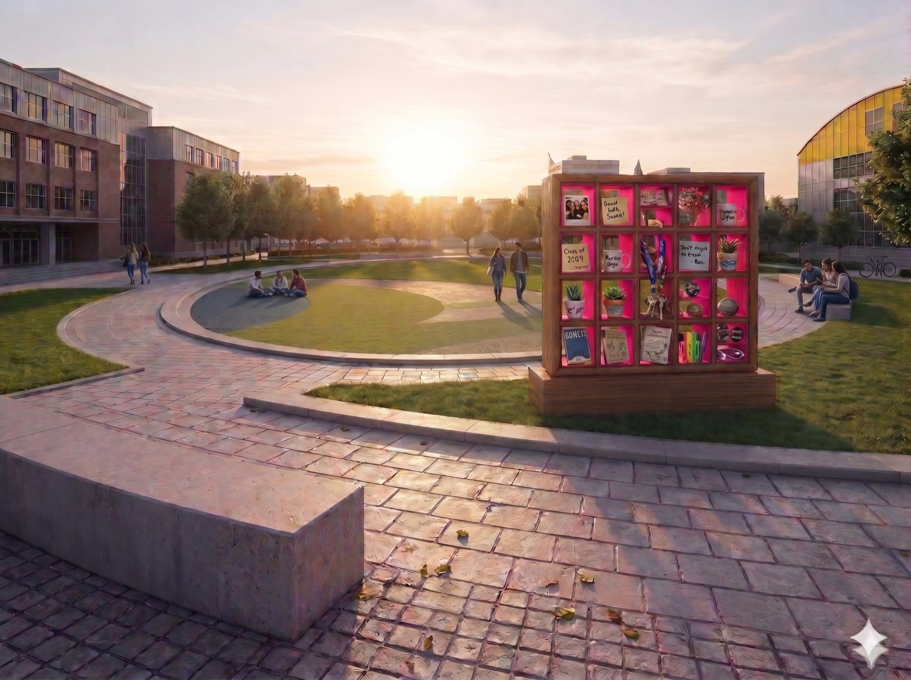
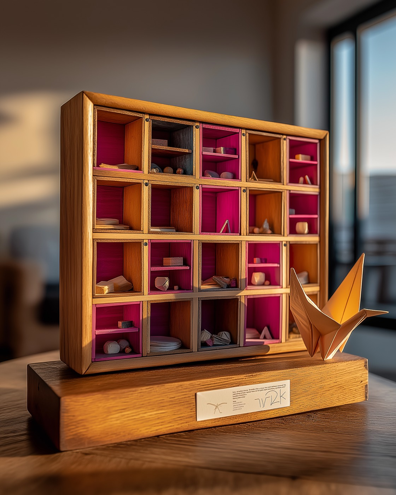

Pick any cubby on the wall. A filled one shows what a stranger left and the prompt that travels with it. An empty one is waiting for you to leave something.
La Staffetta is a chain of small wooden exchange stations in the Ovale at Campus Durando. Leave an object, take one, and read a prompt linked to whoever was here before you. Two strangers who never meet end up in conversation through a third thing. Over weeks, the chains are pinned to a wall, and the campus's quietest social fabric becomes visible.
The digital twin extends the relay beyond the Ovale's catchment. Remote, international, or graduated participants can watch their chain advance, and the chain, invisible in physical space because it accumulates over weeks, becomes legible at a glance.

The Relay Cabinet: warm larch, magenta painted only on the interior back walls so empty cubbies read as invitation.